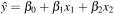
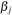
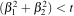
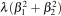
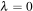
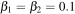
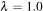
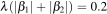
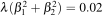
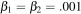

(Terence teaches in University of San Francisco's MS in Data Science program. You might know Terence as the creator of the ANTLR parser generator.)
Contents
If we think about regularization as just constraining how close we can get to the true loss function minimum, regularization is not that hard to understand (assuming you understand linear models, of course). Conceptually, regularization uses a circle (L2) or diamond (L1) as a hard constraint. If the loss function minimum location is outside the constraint region, the regularized coefficients will appear somewhere on the boundary of the constraint region. We saw this earlier, and depicted the constraint region as a simple gray circle for L2 regularization:
So, this is conceptually how things work, but it's not easy/efficient to implement regularization this way. Let's quickly review the mathematics notation that describes the conceptual constraints; then we can move on to how we actually express regularization for implementation purposes.
(The code to generate all images is available.)
We want to fit a linear model with three coefficients and two variables to some data:

To do that, we want to pick  coefficients that minimize the loss function; the loss function just says how good of a fit the equation is to the training data. The mean squared error is the usual loss function and it is the average squared difference between the known true  values and our predictions,
values and our predictions,  :
:
By substituting into the loss function, we get the typical equation that describes fitting a linear model:
To add a hard constraint, we add “subject to” language. For L2 it, looks like this:
and, for L1, it looks like:
To implement a loss function with a hard constraint, we could use a gradient descent minimization approach as usual. The problem is that, at each step moving us closer to the loss function minimum, we'd need an IF-statement asking if  had exceeded the constraint. Certainly that would work, but it would definitely slow down the computation. (Insert discussion of branching, pipeline bubbles, etc... on modern processors).
had exceeded the constraint. Certainly that would work, but it would definitely slow down the computation. (Insert discussion of branching, pipeline bubbles, etc... on modern processors).
An alternative approach is to convert the constraint into just another term of the loss function, but at the cost of making it a soft constraint, not a hard constraint. For L2, replace “subject to ” with :
and, for L1, we get the analogous:
This replacement is mathematically legal because there exists a  value that is equivalent to some t for the hard constraint, per the magic of Lagrange multipliers. is unknown just like t, but at least now we have a single function to minimize, rather than a function subject to a constraint. To find , we try a bunch of values and see which one gives us a regularized linear model that has the smallest validation set error.
value that is equivalent to some t for the hard constraint, per the magic of Lagrange multipliers. is unknown just like t, but at least now we have a single function to minimize, rather than a function subject to a constraint. To find , we try a bunch of values and see which one gives us a regularized linear model that has the smallest validation set error.
The loss function now has two terms, one for MSE and one for throttling down coefficient values. Visually, as shown in Figure 4.1, we get two bowl-shaped quadratic surfaces, where the soft constraint is orange and centered at the origin (0,0). The larger the coefficient(s), the higher the orange penalty term and, hence, the higher the loss function. It keeps coefficients low, like a hard constraint, but not at a fixed boundary. Larger coefficients are just more “expensive.”
| (a) | (b) |
|---|---|

|

|
Somewhere along the dotted line in the 3D to 2D projection of Figure 4.1 (b), our loss function optimizer will find coordinates for the minimal value. The big X marks the ordinary loss function location minimum  and (0,0) is the center of the penalty term. As we move away from (0,0) the penalty term is going to get large very quickly, because the penalty term is a quadratic, . The net effect is that regularization raises the complete loss “bowl” and pulls the minimum loss location closer to origin.
and (0,0) is the center of the penalty term. As we move away from (0,0) the penalty term is going to get large very quickly, because the penalty term is a quadratic, . The net effect is that regularization raises the complete loss “bowl” and pulls the minimum loss location closer to origin.
What happens if we set ? The penalty turn disappears and we get the original loss function.
What happens if we set it very high? That means that only coefficients very close to (0,0) will be suitable because the ordinary loss function bowl has effectively been pulled very close to (0,0).
Figure 4.2 illustrates how the complete loss function, with both ordinary loss function and penalty term, changes as moves from 0 to 6.0. The training data is the same; the only thing changing is . The complete loss function moves upwards and towards the origin. (It's not the best animation, but it stretched my matplotlib knowledge to the limit!)

Turning to L1 briefly, the exact same soft constraint mechanism is at play except that, instead of the bowl shape in Figure 4.1 (a), L1 uses an upside down pyramid with its point stuck into the origin. The pyramid base gets larger and larger away from the origin. The original loss function is again raised and moved towards the origin, but does so more slowly because the L1 penalty term is linear in the coefficients not a quadratic like L2.
The difference between L1 and L2 is most pronounced when the coefficients become less than 1.0. Imagine that  and  for simplicity. L1's penalty term  but L2's penalty term , which is an order of magnitude smaller. That implies that L1 has little problem pushing the loss function up and towards the origin until one or more coefficients become zero. L2, on the other hand, requires larger and larger as it struggles to add loss to the complete loss function. When the coefficients get very close to zero, say, , the L2 penalty term is adding just 0.000002 to the overall loss function, whereas, L1 adds 0.002. The effect is that the L2 coefficients do not move towards the origin very quickly when less than 1.
To summarize, regularization conceptually uses a hard constraint to prevent coefficients from getting too large. For implementation purposes, however, we convert the “subject to” hard constraint to a soft constraint by adding the constraint as a term to the loss function. This term is a soft constraint because there is no threshold or clipping; larger coefficients are simply more expensive. The effect is to shift the ordinary loss function “bowl” upwards and the loss function minimum towards the origin.
So, now you've got it all! You know how regularization works conceptually, how L1 and L2 differ in terms of getting zero coefficients, and how we actually express regularization and practice. Congratulations if you've made it all this way! If you'd like to learn how we use gradient descent to implement regularization, take a look at a project I give my first semester graduate students in data science: Using gradient descent to fit regularized linear models.
The end.